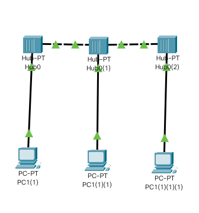
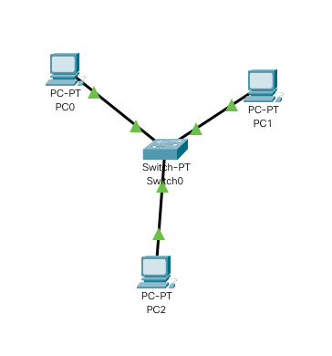
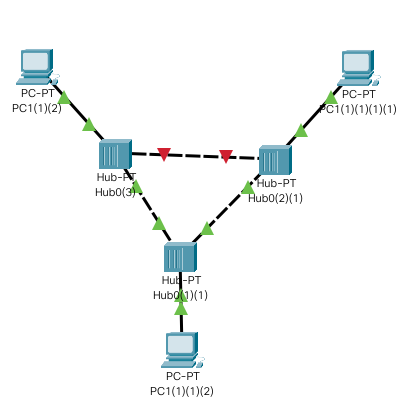
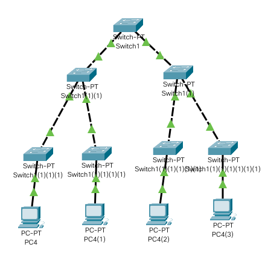
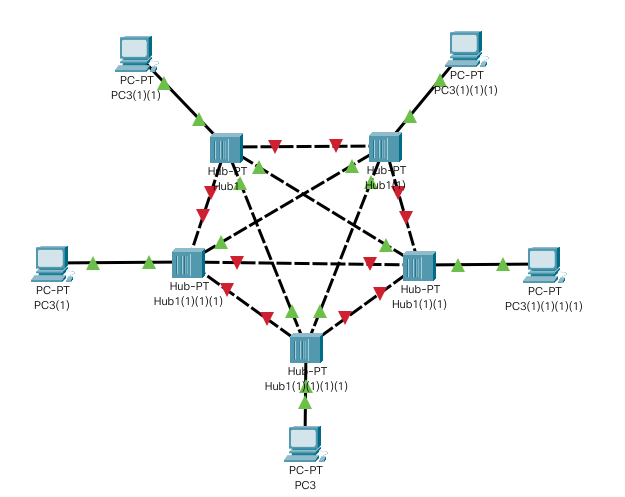
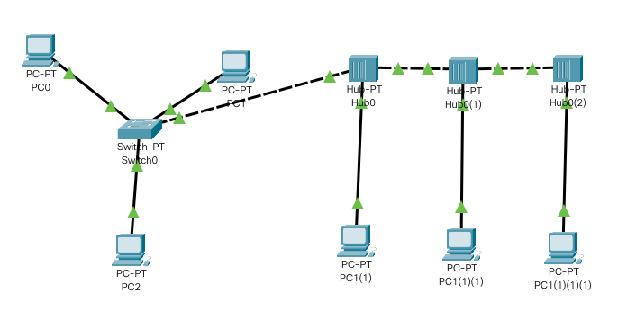

Topologias de Red
La topología de red se define como una familia de comunicación usada por los computadores que conforman una red para intercambiar datos. En otras palabras, la forma en que está diseñada la red, sea en el plano físico o lógico. El concepto de red puede definirse como "conjunto de nodos interconectados". Un nodo es el punto en el que una curva se intercepta a sí misma. Lo que un nodo es concretamente, depende del tipo de redes a que nos refiramos.
Para este documento mostraremos topologias montadas con dispositivos modernos sobre un simulador de cisco.
Topologia BUS
Topología de bus En la topología de bus todos los nodos (computadoras) están conectados a un circuito común (bus). La información que se envía de una computadora a otra viaja directamente o indirectamente, si existe un controlador que enruta los datos al destino correcto. La información viaja por el cable en ambos sentidos a una velocidad aproximada de 10/100 Mbps y tiene en sus dos extremos una resistencia (terminador). Se pueden conectar una gran cantidad de computadoras al bus, si un computador falla, la comunicación se mantiene, no sucede lo mismo si el bus es el que falla. El tipo de cableado que se usa puede ser coaxial, par trenzado o fibra óptica. En una topología de bus, cada computadora está conectada a un segmento común de cable de red. El segmento de red se coloca como un bus lineal, es decir un cable largo que va de un extremo a otro de la red, y al cual se conecta cada nodo de ésta. El cable puede ir por el piso, las paredes, el techo o por varios lugares, siempre y cuando sea un segmento continuo.
Esta topologia es de las primeras implementadas en las redes informaticas, la aproximacion mas correcta de este tipo de red en la actualidad podriamos tenerla uniendo las pc con dispositivos no inteligentes como los hubs.
Topologia Estrella
Reduce la posibilidad de fallo de red conectando todos los nodos a un nodo central. Cuando se aplica a una red basada en la topología estrella este concentrador central reenvía todas las transmisiones recibidas de cualquier nodo periférico a todos los nodos periféricos de la red, algunas veces incluso al nodo que lo envió. Todos los nodos periféricos se pueden comunicar con los demás transmitiendo o recibiendo del nodo central solamente. Un fallo en la línea de conexión de cualquier nodo con el nodo central provocaría el aislamiento de ese nodo respecto a los demás, pero el resto de sistemas permanecería intacto. El tipo de concentrador hub se utiliza en esta topología, aunque ya es muy obsoleto; se suele usar comúnmente un switch.
La desventaja radica en la carga que recae sobre el nodo central. La cantidad de tráfico que deberá soportar es grande y aumentará conforme vayamos agregando más nodos periféricos, lo que la hace poco recomendable para redes de gran tamaño. Además, un fallo en el nodo central puede dejar inoperante a toda la red. Esto último conlleva también una mayor vulnerabilidad de la red, en su conjunto, ante ataques.
Topologia Anillo
Si el nodo central es pasivo, el nodo origen debe ser capaz de tolerar un eco de su transmisión. Una red, en estrella activa, tiene un nodo central activo que normalmente tiene los medios para prevenir problemas relacionados con el eco.
Una red en anillo es una topología de red en la que cada estación tiene una única conexión de entrada y otra de salida. Cada estación tiene un receptor y un transmisor que hace la función de traductor, pasando la señal a la siguiente estación. En este tipo de red la comunicación se da por el paso de un token o testigo, que se puede conceptualizar como un cartero que pasa recogiendo y entregando paquetes de información, de esta manera se evitan eventuales pérdidas de información debidas a colisiones. En un anillo doble (Token Ring), dos anillos permiten que los datos se envíen en ambas direcciones (Token passing). Esta configuración crea redundancia (tolerancia a fallos). Evita las colisiones.
Topologia Arbol
(También conocida como topología jerárquica) puede ser vista como una colección de redes en estrella ordenadas en una jerarquía. Éste árbol tiene nodos periféricos individuales (por ejemplo hojas) que requieren transmitir a y recibir de otro nodo solamente y no necesitan actuar como repetidores o regeneradores. Al contrario que en las redes en estrella, la función del nodo central se puede distribuir.
Como en las redes en estrella convencionales, los nodos individuales pueden quedar aislados de la red por un fallo puntual en la ruta de conexión del nodo. Si falla un enlace que conecta con un nodo hoja, ese nodo hoja queda aislado; si falla un enlace con un nodo que no sea hoja, la sección entera queda aislada del resto.
Para aliviar la cantidad de tráfico de red que se necesita para retransmitir en su totalidad, a todos los nodos, se desarrollaron nodos centrales más avanzados que permiten mantener un listado de las identidades de los diferentes sistemas conectados a la red. Éstos switches de red “aprenderían” cómo es la estructura de la red transmitiendo paquetes de datos a todos los nodos y luego observando de dónde vienen los paquetes de respuesta también es utilizada como un enchufe u artefacto.
Topologia Malla
La topología de red mallada es una topología de red en la que cada nodo está conectado a todos los nodos. De esta manera es posible llevar los mensajes de un nodo a otro por distintos caminos. Si la red de malla está completamente conectada, no puede existir absolutamente ninguna interrupción en las comunicaciones. Cada servidor tiene sus propias conexiones con todos los demás servidores. Las redes de malla son auto ruteables. La red puede funcionar, incluso cuando un nodo desaparece o la conexión falla, ya que el resto de los nodos evitan el paso por ese punto. En consecuencia, la red malla, se transforma en una red muy confiable.
Topologia Mixta o Hibrida
Topología híbrida, las redes pueden utilizar diversas tipologías para conectarse, como por ejemplo en estrella. La topología híbrida es una de las más frecuentes y se deriva de la unión de varios tipos de topologías de red, de aquí el nombre de híbridas. Ejemplos de topologías híbridas serían: en árbol, estrella-estrella, bus-estrella, etc.
Su implementación se debe a la complejidad de la solución de red, o bien al aumento en el número de dispositivos, lo que hace necesario establecer una topología de este tipo. Las topologías híbridas tienen un costo muy elevado debido a su administración y mantenimiento, ya que cuentan con segmentos de diferentes tipos, lo que obliga a invertir en equipo adicional para lograr la conectividad deseada.
Conclusion
las topologias son una parte importante de la evolucion de las computadoras y son una parte importante de nuestro dia a dia en este documento pudimos revisar poco a poco cada una de las topologias actuales y ver como se estructurarian en packet tracer
Referencias
Topologías de Red - REDES/INFORMÁTICA. (s. f.). sites.google.com. Recuperado 5 de noviembre de 2020, de https://sites.google.com/site/tecnocompu32/home/topologias-de-red